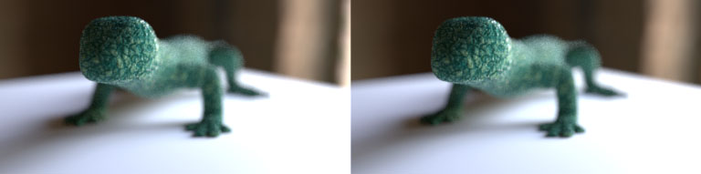

Obq_StereoLens
Class
Lens
Synopsis
A camera lens shader that allows you to render a pair of stereo images into a single frame.

Fig.1 : Example of lizard rendered with Obq_StereoLens.
Warning : Using SItoA 3.1.2 and up, you need to add an Arnold Camera Option property and select "Custom (lens shader)" as the camera type.
Usage
Simply use the Obq_StereoLens as a lens shader on the center camera of the Softimage stereo camera rig or your own rig. Pick the left and right camera. When you render, select the center camera and make sure the scene/pass output resolution is equal to the Render Resolution of the shader. Once rendered, copy-paste the crop node text in Nuke to create left crop and right crop nodes. You can also add depth of field from within the shader UI.
View Mode
View Mode [viewMode]
This is the type of frame that will be rendered :
| • | Center Camera | : | because the lens shader is applied to the center camera, this is the view as is. | |
| • | Left Camera | : | renders what the left camera views. | |
| • | Right Camera | : | renders what the right camera views. | |
| • | Stereo Camera <left-right> | : | renders a single frame of the stereo camera pair, the left camera subframe to the left side and the right camera subframe to the right. | |
| • | Stereo Camera <down-up> | : | like the previous option, but the left camera subframe will be at the bottom and the right camera subframe will be on top. This is the prefered rendering mode for stereo image pair. |
Note : Whenever you use a Stereo Camera <...> view mode, the output resolution in the proper dimension will be doubled.
Cameras
Left [leftCamera]
The full name of the left camera.
Note : You can click on the "Pick Left and Right Cameras" button to begin a pick session.
Right [rightCamera]
The full name of the right camera.
Status [cameraStatus]
This will indicate if both cameras are valid.
Automatic Overscan
Enable [useOverscan]
Enables the automatic overscan mode to counter the blended lines of pixels. This should always be checked.
Filter Size [filterSize]
The width of the filter in the render options > Sampling > Pixel Filtering > Width.
Note : Because of filtering, the lines of pixels immediately next to the left-right border are blended, the floor(filter_width/2) lines in fact. To correct this, an automatic overscan mode was created. Make sure the render width and height are correct. Copy-paste the left/right crop text in Nuke to create the adequate crop nodes.
Target Resolution
Width [targetResolutionX]
The final width in pixels you want each left/right frame to have.
Height [targetResolutionY]
The final height in pixels you want each left/right frame to have.
Render Resolution
Width [renderResolutionX]
The width in pixels needed to give the target width once cropped because of blended pixels.
Height [renderResolutionY]
The height in pixels needed to give the target height once cropped because of blended pixels.
Automatic update of pass output resolution [updatePassResolution]
Checking this will enable the update of the resolution automatically in the pass options.
Nuke Info
Copy-paste the text to create the proper crop nodes in Nuke.
Depth of Field
Enable [useDof]
Enable the depth of field.
Note : If you enable this here, you don't need to enable it in the Render Options.
Note : The result is not exactly the same as Arnold's default DoF, but it's very similar.
Distance [focusDistance]
The distance at which an object is in focus.
Focus plane is a plane [focusPlaneIsPlane]
Wether or not the focus plane is actually a plane or curved plane (on by default).
Recalculate focus distance for left and right cameras[recalculateDistanceForSideCameras]
This allows to adjust the focus distance, given for the center camera, for the left and right camera. Don't check this if you're using an off-axis stereo type rig.
Size [apertureSize]
This size controls the amount of blur (size of the iris).
Aspect Ratio [apertureAspectRatio]
The aspect ratio of the lens. Values smaller than 1 will give an horizontal elongated oval vand values greater than 1 will give a vertical elongated oval.
Polygonal Aperture [usePolygonalAperture]
The shape of the iris is polygonal instead of circular.
Blades [apertureBlades]
The number of blades the iris has. For example, using 5 blades will give a pentagon shaped iris.
Blade Curvature [apertureBladeCurvature]
A value representing how sharp is the shape of the iris. A value of 1 will give a perfect circle. A value of 0 will give a sharp shape. Values smaller than 0, will tend to give a star shape iris.

Fig.2 : Blade curvature of 1, 0, -1, -2 and -3.
Rotation [apertureRotation]
The rotation in degrees of the shape of the iris.
Bokeh Quality
The bokeh "quality" look can be altered using a bias and gain parameters. This effectively changes the distribution of the rays.
Note : These parameters will eventually be replaced by better sampling functions and image based bokeh.
Invert [bokehInvert]
Invert the output of the bias/gain operation.
Bias [bokehBias]
Bias control of the bokeh.
Gain [bokehGain]
Gain control of the bokeh.
| • | Poor bokeh | : | (invert, bias, gain) values around (false, 0.7, 0.2 ). | |
| • | Neutral bokeh | : | (invert, bias, gain) = (false, 0.5, 0.5 ). | |
| • | Good bokeh | : | (invert, bias, gain) values around (true, 0.33, 0.685 ). |

Fig.3 : Poor, Neutral and Good bokeh.